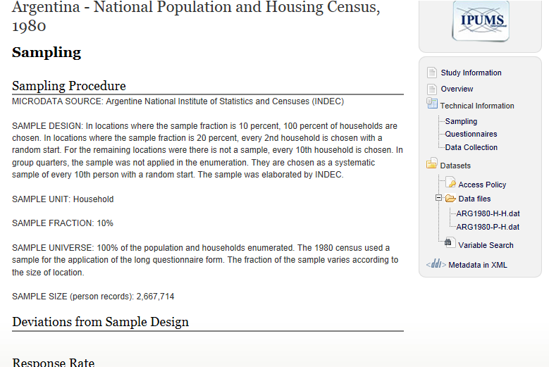

Introduction
Here's the LODE view of the whole thing. And here's the Turtle source. And open issues.
Scope and Purpose
This specification is designed to support the discovery of
microdata sets and related metadata using RDF technologies in the
Web of Linked Data. Many archives and other organizations have
large amounts of data, sometimes publically available, but often
confidential in nature, requiring applications for access. Many
such organizations use the
Data Documentation Initiative
standard, which is a proven and highly detailed XML metadata
format for describing rectangular data sets of this type.
This vocabulary leverages the DDI specification to create a
simplified version of this model for the discovery of data files.
The data holdings of data archives are often collected by
researchers, and only afterwards disseminated by archives. Other
data-producing organizations such as research centers and
statistical agencies are also increasingly interested in the
DDI standards for documenting their own micro-data. In general
terms, most DDI metadata describes data sets for the social,
behavioural, and economic sciences. This data is fairly
consistent in format, consisting of rectangular data files with
columns containing variables for a set of cases, contained in
the rows. It is often collected by survey, although in some
cases may come from administrative sources, sensors, or
registers.
This vocabulary is intended not only for use by the research
data community, but also by any others needing an RDF vocabulary
for describing this type of rectangular data. This vocabulary
will provide a useful model for describing some of the data sets
now being published by open government initiatives, by providing
a rich metadata structure for them. While the data sets may be
available (typically as CSV files) the metadata which
accompanies them is not necessarily coherent, making the
discovery of these data sets difficult. This vocabulary would
help to overcome this difficulty by allowing for the creation of
standard queries to programmatically identify data sets, whether
made available by government or held within a data archive.
About DDI
The Data Documentation Initiative standards are produced and
maintained by a member-based consortium of global scope, the
DDI Alliance. Housed
currently at the
Interuniversity Consortium
for Political and Social Research (ICPSR) at the University
of Michigan, there are currently more than 30 member
institutions. The standards have been under development for more
than ten years, and are in widespread use among data archives
and libraries, producers of research data, secure data centers,
and statistical agencies.
There are two major versions of DDI: the
“codebook”
version, which is an XML format for holding general information
about a study, along with its data dictionary; and the
“Lifecycle”
version of DDI, which allows for the description of more complex
multi-wave studies, throughout the data lifecycle, from study
conception through data collection and processing.
This vocabulary is not specific to either of these versions,
but represents the major types of metadata they contain in a
highly simplified form, for the purposes of discovery. The XML
Codebook and Lifecycle versions of DDI are very broad: these
standards contain hundreds of metadata elements, providing
enough information to programmatically work with the data files
for such functions as the automatic creation of databases, and
transformations between statistical packages. DDI in both
versions is generally used to describe data found in ASCII
files, whether positional files with fixed-width fields or files
using a delimited format such as CSV.
It is difficult to claim that there is a single agreed
conceptual model for describing research data in the social,
behavioural, and economic sciences—there is a wide range of
models and terms. However, the issues faced in this area have
been the subject of discussion within the DDI community for many
years, and the DDI model represents the best consensus which
exists today. As such, it gives us a good basis for creating a
vocabulary which will be recognizable to researchers familiar
with this type of data.
Relationship to Data Cube and DCAT
The Discovery Vocabulary is aligned to several other metadata
vocabularies used in the RDF community.
The Data Catalog
Vocabulary (DCAT) is a W3C standard for describing catalogs
of datasets, and we map to it in two places:
Our LogicalDataSet is a subclass of DCAT’s Dataset, and our
DataFile is a subclass of DCAT’s Distribution. DCAT makes few
assumptions about the kind of datasets being described,
and focuses on general metadata about the datasets
(mostly using Dublin Core), and on different ways of
distributing and accessing the dataset, including availability
of the dataset in multiple formats. Combining terms from both
DCAT and the Discovery Vocabulary can be useful for a number of
reasons:
- Describing collections (catalogs) of research datasets
- Providing additional information about physical aspects (file size, file formats) of research data files
- Providing information about the data collection that produced the datasets in a data catalog
- Providing information about the logical structure (variables, concepts, etc.) of tabular datasets in a data catalog
The Data Cube
vocabulary is a W3C standard for representing data cubes,
that is, multidimensional aggregate data. Data cubes are often
generated by tabulating or aggregating record-level datasets.
For example, if an observation in a census data cube indicates
the population of a certain age group in a certain region is
12345, then this fact was obtained by aggregating that number of
individual records from a record-level (or “microdata”) dataset.
The Discovery Vocabulary contains a property “aggregation” that
indicates that a Cube dataset was derived by tabulating a
record-level dataset.
Data Cube provides for the description of the structure of
such cubes, but also for the representation of the cube data
itself, that is, the observations that make up the cube dataset.
This is not the case for the the Discovery Vocabulary, which
only describes the structure of a dataset, but is not concerned
with representing the actual data in it. The actual data is
assumed to sit in a data file (e.g., a CSV file, or in a
proprietary stats package file format) that is not represented
in RDF.
A worked example
We have a sample of a survey which has been documented using
DDI XML—the 1980 Argentine National Population and Housing
Census. The version of this data we are using as our example is
the one disseminated by IPUMS,
which provides internationally harmonized census data, to make
it more useful for cross-border research. Thus, this data set is
produced by two organizations: The Argentine National Institute
of Statistics and Censuses, and the Minnesota Population Center
housed in the University of Minnesota.
To give some idea of what is contained in the metadata set,
we will use some screen shots from a portal which indexes the
DDI files to facilitate searching, and reflects the contents in
a fashion which is easy to view.
Figure 1 shows us the overview page for this study, giving us
some basic information—data producers, title, year, country, and
a link to the access policies. If we look at the right-hand
panel, we see an outline of the metadata contents of the file,
including information about the questionnaire used, sampling
methodology, and data collection activities, as well as detailed
information about the variables contained in the two data
files.
Not all of this information is useful in a data discovery
scenario—sampling and data collection methodologies is not
typically indexed for searches. Information about the
questionnaire is, as is detailed information about the variables
contained in the files. We will look more closely at the
metadata of primary interest for our discovery scenario.
Figure 2 shows us the information about access policies,
which typically is of interest to those searching for data.

While the sampling methodology may not be of great interest
for those searching for data, one field within this section is:
the “universe”, that is, the population being studied. Figure 3
gives us an example of this information.
In some cases we may have a lot of information about the
questionnaires used, and it is very common to search for data by
the text of the question used to collect it. Sometimes there
will be a PDF of a questionnaire, and sometimes question text
may be linked to individual variables within a file. In this
case, we have only a textual description of the set of forms
used in the census (Figure 4).
Next we find some general information about the data files
produced by this study (Figure 5.)
In Figure 6 we see the list of variables contained in the
data file. For each of these we will also have a detailed view,
showing the codes and categories used to encode the actual
responses in the variables (Figure 7).
At the bottom of the screen showing the variable detail, we
can see that the variable for roofing material is associated
with a high-level concept, “Dwelling characteristics variables.”
(Figure 8.)
Acknowledgements
This work has been started at the first workshop on
“Semantic Statistics for Social, Behavioural, and Economic
Sciences: Leveraging the DDI Model for the Linked Data Web” at
Schloss Dagstuhl - Leibniz Center for Informatics, Germany in
September 2011 organized by Richard Cyganiak, Arofan Gregory,
Wendy Thomas, and Joachim Wackerow. This work has been continued
at these three meetings:
- Follow-up working meeting in the course of the 3rd Annual
European DDI Users Group Meeting (EDDI11) in Gothenburg, Sweden
in December 2011
- Second workshop on “Semantic Statistics for Social,
Behavioural, and Economic Sciences: Leveraging the DDI Model
for the Linked Data Web” at Schloss Dagstuhl - Leibniz Center
for Informatics, Germany in October 2012
- Follow-up working meeting at GESIS - Leibniz Institute for
the Social Sciences in Mannheim, Germany in February 2013
This work has been supported by contributions of the participants of the events mentioned above:
- Archana Bidargaddi (NSD - Norwegian Social Science Data Services)
- Thomas Bosch (GESIS - Leibniz Institute for the Social Sciences, Germany)
- Sarven Capadisli (Bern University of Applied Sciences, Switzerland)
- Franck Cotton (INSEE - Institut National de la Statistique et des Études Économiques, France)
- Richard Cyganiak (DERI, Digital Enterprise Research Institute, Ireland)
- Daniel Gilman (BLS - Bureau of Labor Statistics, USA)
- Arofan Gregory (ODaF - Open Data Foundation, USA and DDI Alliance Technical Implementation Committee)
- Rob Grim (Tilburg University, Netherlands)
- Marcel Hebing (SOEP - German Socio-Economic Panel Study)
- Larry Hoyle (University of Kansas, USA)
- Yves Jaques (FAO of the UN)
- Jannik Jensen (DDA - Danish Data Archive)
- Benedikt Kämpgen (Karlsruhe Institute of Technology, Germany)
- Stefan Kramer (CISER - Cornell Institute for Social and Economic Research, USA)
- Amber Leahey (Scholars Portal Project - University of Toronto, Canada)
- Olof Olsson (SND - Swedish National Data Service)
- Heiko Paulheim (Technical University Darmstadt, Germany)
- Abdul Rahim (Metadata Technologies Inc., USA)
- John Shepherdson (UK Data Archive)
- Dan Smith (Algenta Technologies Inc., USA)
- Humphrey Southall (Department of Geography, UK Portsmouth University)
- Wendy Thomas (MPC - Minnesota Population Center, USA and DDI Alliance Technical Implementation Committee)
- Johanna Vompras (University Bielefeld Library, Germany)
- Joachim Wackerow (GESIS - Leibniz Institute for the Social Sciences, Germany and DDI Alliance Technical Implementation Committee)
- Benjamin Zapilko (GESIS - Leibniz Institute for the Social Sciences, Germany)
- Matthäus Zloch (GESIS - Leibniz Institute for the Social Sciences, Germany)
We would like to thank the following organizations which have
supported this work: